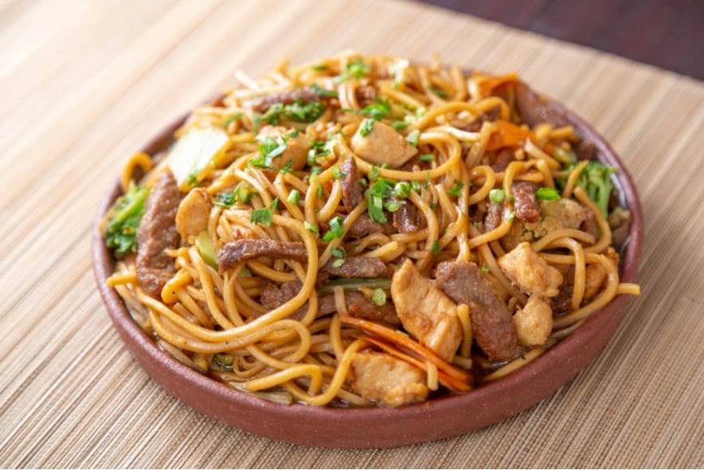

Yakisoba

Ingredients
- ½ onion
- 1 carrot
- 3 shiitake mushrooms
- 2 green onions/scallions
- 4 cabbage leaves
- Meat and/or seafood of your choice
- 2 tbsp oil
- Black pepper
- Yakisoba noodles
Yakisoba Sauce Ingredients:
- 2 tsp sugar (adjust according to your preference)
- 2 tsp soy sauce
- 2 tsp oyster sauce
- 4 tbsp ketchup
- 4 tbsp Worcestershire sauce
Instructions
- Make the yakisoba sauce by mixing the sugar, soy sauce, oyster sauce, ketchup, and Worcestershire sauce. You can add more sugar if you think it is needed.
- Prepare your vegetables. Slice the onion, carrot, and mushrooms, chop the green onion into around 5 cm pieces, cut the cabbage into bite-size pieces, and cut the meat according to your preference.
- Heat the oil in a pan or wok on medium-high heat. Cook the meat and/or seafood of your choice.
- Add the sliced onions and carrots, and cook for 1-2 minutes.
- Add the cabbage and cook until it is almost tender. Be careful not to overcook it.
- Add the chopped green onions and sliced mushrooms, and cook for around 1-2 minutes. Season with the black pepper according to your preference.
- Prepare your yakisoba noodles by putting them in a sieve, running hot water over them quickly, and loosening them. Place into the pan or wok you are using and turn the heat to medium. Be careful because the noodles might stick to the pan or wok.
- Add the yakisoba sauce and mix well. Enjoy!
Servings
3-4 servings
Back to Recipes